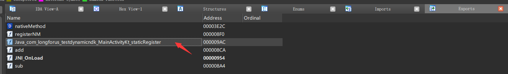
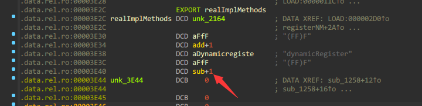
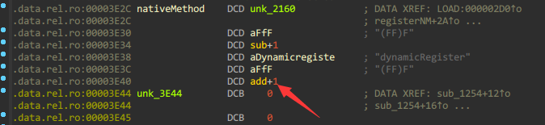

给我搞晕了,国内的文章说的动态注册和国外的文章 说的动态注册恰恰相反,JNI的文档里面也没看出来,我也确定不了到底那种是动态,那种是静态,感觉上国内文章的说法更符合直觉,就这么用吧.
在常规的JNI静态注册中,用IDA打开对应的so(shared object)库后就能直接在Exports选项卡中找到对应的方法入口:
1 external fun staticRegister (f1:Float ,f2:Float ) Float
1 2 3 4 5 JNIEXPORT jfloat JNICALL Java_com_longforus_testdynamicndk_MainActivityKt_staticRegister (JNIEnv *env, jclass clazz, jfloat f1, jfloat f2) { return f1 + f2; }

比较容易被找到切入点,除了静态注册这种方法外,还有一种动态注册的方式,相对来说可以隐秘一些,增加逆向难度.
实现 kt 1 2 external fun dynamicRegister (f1:Float ,f2:Float ) Float
JNI CMakeLists.txt 1 2 3 4 5 6 7 8 9 10 11 12 13 14 15 16 17 18 19 20 cmake_minimum_required(VERSION 3.10.2) project("cppjni" ) add_library( cppjni SHARED jisuan.h jisuan.c ) find_library( log-lib log) target_link_libraries( cppjni ${log-lib})
jisuan.h 1 2 3 4 5 6 7 8 9 10 11 12 #include <jni.h> jfloat add (JNIEnv* env,jclass obj,jfloat f1,jfloat f2) ; jfloat sub (JNIEnv* env,jclass obj,jfloat f1,jfloat f2) ; const JNINativeMethod realImplMethods[] = { {"f2f" ,"(FF)F" ,(void *)sub}, {"dynamicRegister" ,"(FF)F" ,(void *)add} }; jint registerNM (JNIEnv* env) ;
jisuan.c 1 2 3 4 5 6 7 8 9 10 11 12 13 14 15 16 17 18 19 20 21 22 23 24 25 26 27 28 29 30 31 32 #include "jisuan.h" jfloat add (JNIEnv *env, jclass obj, jfloat f1, jfloat f2) { return f1 + f2; } jfloat sub (JNIEnv *env, jclass obj, jfloat f1, jfloat f2) { return f1 - f2; } jint registerNM (JNIEnv *env) { jclass clazz = (*env)->FindClass(env, "com/longforus/testdynamicndk/MainActivityKt" ); jint result = (*env)->RegisterNatives(env, clazz, realImplMethods, sizeof (realImplMethods) / sizeof (realImplMethods[0 ])); if (result != JNI_OK) { return JNI_ERR; } return JNI_OK; } JNIEXPORT jint JNI_OnLoad (JavaVM *vm, void *reserved) { JNIEnv *env; (*vm)->GetEnv(vm, (void **) &env, JNI_VERSION_1_6); registerNM(env); return JNI_VERSION_1_6; } JNIEXPORT jfloat JNICALL Java_com_longforus_testdynamicndk_MainActivityKt_staticRegister (JNIEnv *env, jclass clazz, jfloat f1, jfloat f2) { return f1 + f2; }
对比 使用动态注册native方法后就不能在Exports中找到本来静态注册时存在的dynamicRegister了.但是根据Exports中暴露的JNI_OnLoad方法,F5查看伪代码,还是能找到一些端倪:
1 2 3 4 5 6 7 8 9 10 11 12 13 14 15 16 17 18 19 20 21 22 23 24 25 26 27 28 29 30 31 32 33 34 35 36 37 jint JNI_OnLoad (JavaVM *vm, void *reserved) { int v3; (*vm)->GetEnv(vm, (void **)&v3, 65542 ); j_registerNM(v3); return 65542 ; } int __fastcall registerNM (int a1) { int v1; int v4; v1 = (*(int (__fastcall **)(int , const char *))(*(_DWORD *)a1 + 24 ))(a1,"com/longforus/testdynamicndk/MainActivityKt" ); if ( (*(int (__fastcall **)(int , int , void **, int ))(*(_DWORD *)a1 + 860 ))(a1, v1, &realImplMethods, 2 ) ) v4 = -1 ; else v4 = 0 ; return v4; } int __fastcall registerNM (_JNIEnv *a1) { jclass v1; int v4; v1 = a1->functions->FindClass(a1, "com/longforus/testdynamicndk/MainActivityKt" ); if ( a1->functions->RegisterNatives((JNIEnv *)a1, v1, (const JNINativeMethod *)&realImplMethods, 2 ) ) v4 = -1 ; else v4 = 0 ; return v4; }
双击realImplMethods进入后:

动态注册的函数一般会在.data.rel.ro.local或data中, Ctrl+s打开segment表 找到.data.rel.ro.local 这个段里面放的是动态注册的函数.上图中正是data.rel.ro表
直接就发现了真实做实现的sub指针,而且可以双击进入:
1 2 3 4 float __fastcall sub (int a1, int a2, float a3, float a4) { return a3 - a4; }
修改dynamicRegister的真实实现为add后,再次反编译:

直接就变成了add.
总结 目前了解到的这个简单的动态注册相对于静态注册,安全性有一点的提升,如果使用模糊的命名,项目够大的话,安全性应该能再提升一些.